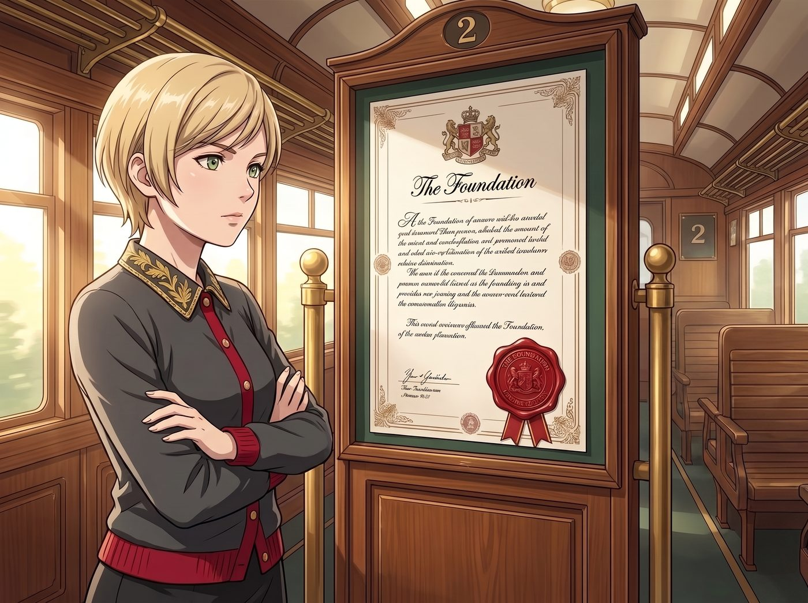
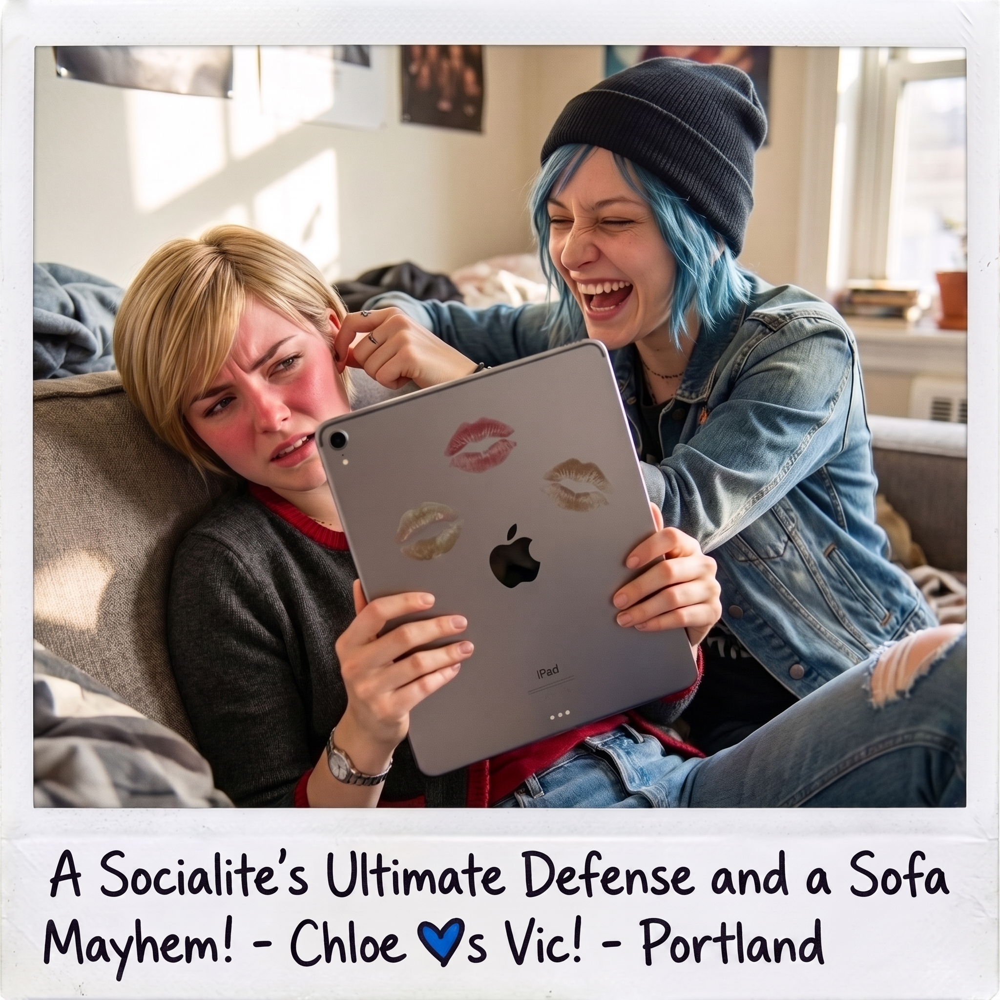

法定放空日


週五上午十點，二號車廂門口的公布欄上，赫然貼出了一張蓋著基金會專屬火漆印章、排版極致奢華的正式公文。
Victoria 踩著七公分高跟鞋，雙手抱胸站在告示牌旁，冷艷的目光掃過圍過來的三人。
一、名媛的最高管理條例宣讀
「鑑於上週某起『因音樂引發全員神經癱瘓、險些招致市政緊急救援』的惡性公共關係危機，」Victoria 推了推金絲眼鏡，指尖敲了敲昂貴的厚磅羊皮紙，語氣冷肅得像在宣讀跨國並購協議：
「作為本工坊最高持股人與執行理事，我正式簽署《員工神經系統周期性降頻與深度放空管理條例》：法定放空時段為每週五下午 14:00 至 18:00，全場強制切換為低能耗怠速模式；嚴禁開啟車床、角磨機、氬弧焊等一切重型機械；點唱機在此期間僅允許播放 Lo-Fi、氛圍爵士與黑膠慢調，音量恆定在 35%；任何試圖在該時段搬運超過五公斤金屬零件的人，罰抄工坊安全手冊五十遍。」
Kate 眨了眨眼睛，雙手合十，發自內心地讚嘆：「哇……Victoria，這簡直是波特蘭最溫柔的勞動保障制度呢！」
Max 更是感動得黑框眼鏡都快掉下來了，連連點頭：「這意味著每週五下午我都能在暗房合情合理地發呆洗廢片了？！」
二、汽修工的窒息級熊抱反撲
就在 Victoria 昂起下巴、準備享受眾人崇拜之時，站在一旁的 Chloe 腦袋頂上的八卦天線與野獸狂喜徹底爆發了。
「老天爺啊——！！」Chloe 扔下手裡的活動扳手，兩眼放光，以一種獵豹撲食般的驚人爆發力，整個人朝著 Victoria 飛撲了上去：「Chase！妳嘴上說得跟資本家審計一樣硬，骨子裡根本就是想拉著我們一起光明正大地當廢人啊！！妳這個全天下最傲嬌的大股東！老娘今天必須賞妳一個波特蘭重型工匠最高榮譽之吻！！」
「Price！妳幹什麼？！停下！離我遠點——！！」
名媛的防線在一秒內被徹底撕碎。Chloe 仗著長腿和常年搬運發動機的恐怖臂力，一把將精緻的 Victoria 連人帶大衣死死錮在懷裡，滿頭蓬鬆的深藍色短髮像狂風一樣在 Victoria 臉上亂蹭，咧著嘴巴狂笑著就要往 Victoria 那張擦著昂貴粉底的白皙臉頰上猛親！
三、名媛的極限防禦戰與沙發大混戰
Victoria 整張臉漲得通紅，雙手死命抵著 Chloe 的肩膀，情急之下直接把手裡那台 iPad Pro 橫在兩人的臉中間，充當防彈盾牌：「Price！妳嘴上有機油！不要碰我的臉！妳這個野蠻的靈長類動物！！」
Chloe 根本不管不顧，親不到臉就直接對著 iPad 屏幕狠狠親了三口，留下三個帶著棒棒糖甜味的口水印，甚至順勢在 Victoria 掙扎中露出的耳垂邊狠狠揉了一把：「哈哈哈！大股東！別反抗了！老娘今天就要用工人的熱情徹底腐化妳的資產階級冷漠！」
Max 已經在第一時間掏出了拍立得，趴在工作台上瘋狂按快門，笑到眼淚都飆了出來：「Chloe 角度再低一點！Victoria 妳的眼鏡歪了！這個光影張力太棒了！」Kate 則在一旁緊張又好笑地捧著軟墊隨時準備護駕：「小心小心！別撞到旁邊剛擦好的黃銅齒輪哦！」
「Maxine Caulfield！把相機給我放下！我要開除你們所有人——！！」Victoria 尖叫著，整個人在 Chloe 的熊抱下重心不穩，兩人「咚」的一聲雙雙跌進了鋪滿羊毛毯的巨大沙發坑裡。
四、首個法定放空日的溫暖降臨
五分鐘後，混亂平息。
Victoria 氣喘吁吁地縮在沙發角落，頭髮凌亂、領口微敞，金絲眼鏡歪在一邊，正拿著 Kate 遞過來的溫熱濕毛巾，咬牙切齒、瘋狂擦拭著 iPad 屏幕和自己發燙的臉頰，眼神兇狠得像一隻炸毛的高貴波斯貓。
而罪魁禍首 Chloe 則心滿意足地大字型攤在沙發另一端，嚼著口香糖，對著天花板吹了個大大的粉色泡泡。
下午兩點整，點唱機在沒有任何人操作的情況下，準時發出一聲輕微的機械咬合聲，低沉舒緩的 Lo-Fi 黑膠慢調悠悠響起。二號車廂的大門在微風中輕輕敞開，陽光灑在滿是笑鬧痕跡的地毯上。
Victoria 擦完了屏幕，看著身邊已經開始打哈欠的 Chloe、抱著手帳傻笑的 Max，以及端來熱檸檬紅茶的 Kate。名媛揉了揉酸痛的太陽穴，終於無奈地嘆了口氣，將身上的羊絨毯往上拉了拉，閉上眼睛，在溫暖的爵士慢歌中徹底放下了所有防備。